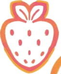
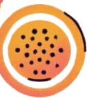
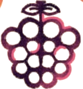

Paletas cremosas
Textura suave, sabor intenso a fruta y un toque cremoso. Ideales para compartir en cualquier momento del día.
Consultar


Hecho en Sucre con fruta local
La magia frutal se siente en cada bocado. Paletas cremosas, bolos y helados elaborados a mano con pulpa de productores locales.
Textura suave, sabor intenso a fruta y un toque cremoso. Ideales para compartir en cualquier momento del día.
ConsultarBolos de fruta bien fría, hechos con pulpa natural. Refrescantes, prácticos y llenos de sabor.
ConsultarLa cremosidad de siempre, con el carácter de las frutas de la región.
ConsultarDiez frutas, diez maneras de refrescarte. La disponibilidad puede variar según la temporada.
En Helarte Deli elaboramos cada producto de manera artesanal, con frutas y pulpas de productores locales. Creemos que la fruta bien tratada no necesita disfraces: basta con respetar su sabor y su frescura.
Trabajamos desde Sucre, Bolivia, con cercanía y cuidado en cada detalle.
Paletas cremosas de frutas, bolos frutales y helados de crema.
Frutilla, mora, mango, naranja, papaya, guayaba, tumbo, chirimoya, piña y maracuyá, según la temporada.
Trabajamos con frutas y pulpas de productores locales.
Usa la sección de contacto o directamente al whatsaap +59167646428
Escríbenos tu consulta y te responderemos lo antes posible.